Communicating Failure Recovery with Robotic Body Movement
Abstract
🔴
Background:
Communication of failure is important for robots to reduce negative impact on people and to maintain collaboration.
🟡
Challenges with existing solutions:
Traditional failure recovery mechanisms in robots are primarily technical, overlooking the importance of human-robot interaction dynamics. These approaches fail to address how robot behaviors influence human perception and willingness to continue collaboration.
🟢
Research goal:
We explored how
robotic arm movements
can
communicate failure
and
promote recovery
through positive social influence. Using body-storming techniques, we designed candidate motions and conducted two studies:
-
Study One
: Identified effective failure recovery motions.
-
Study Two
: Examined how combinations of robot attitude and behavior impact user trust and collaboration willingness.
🔵
Contribution:
Our work could contribute to the area of interactive robot learning area by improving robot’s motion trajectory planning for social failure recovery.
Proposed Study
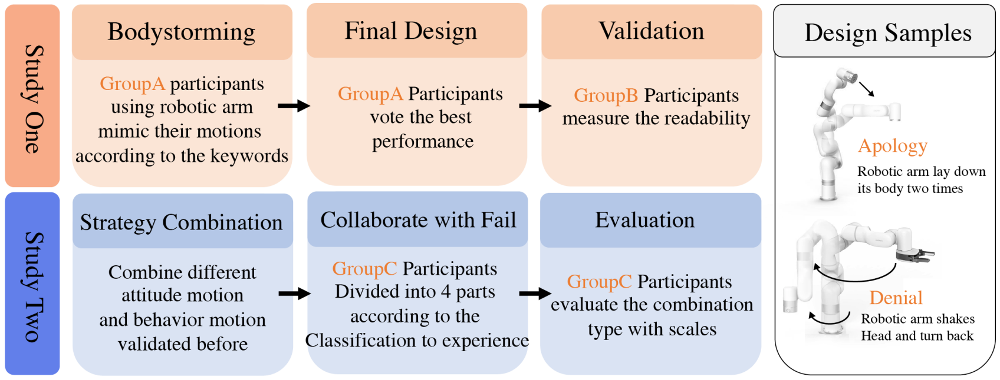
study one
Background
Robots may inevitably fail in collaborative tasks like human.
Recovery strategies
need to be applied in the communication to prevent negative influence of failure.
Previous strategies includes
explanation
,
apologizing
,
denial
,
asking for help
and
humor
. To better indicate the recovery strategies that a robot is about to adopt, the
Theory of Reasoned Action (TRA)
is introduced to help establish a clearer understanding of robot failure communication behaviors.
Attitudes can be categorized as positive or negative and can further be divided into attitudes toward others and attitudes toward oneself . A positive attitude toward others in the context of recovery signifies understanding and acknowledgment of external failures and others' responses. A positive attitude toward oneself reflects self-acceptance and optimism in dealing with failures. Negative attitudes , on the other hand, represent the opposite. The action intention to resolve failures primarily aims to showcase whether the robot possesses the capability to rectify the situation and get the collaborative task back on track. If the robot has the ability, it will convey proactive self-repair through bodily movements. If not, it needs to communicate the intention to seek assistance from humans, indicating a reactive approach to failure recovery.
Based on TRA principles , we have redefined existing failure recovery strategies:
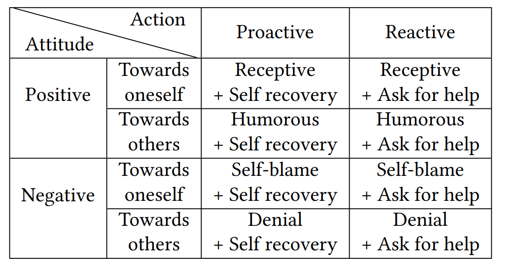
Existing failure recovery strategies are predominantly implemented in humanoid robots and rely heavily on verbal communication. However , there is a significant gap in research on leveraging body movements to enable non-facial robots to effectively convey mitigation intent. Addressing this gap could enhance both the robot's ability to communicate and the human collaborator's willingness to maintain a positive attitude toward future collaboration after failure recovery.
Non-verbal communication is essential for social interaction in non-facial robots, such as robotic arms, whose designs inherently lack expressive facial features (appearance-constrained). These robots are often employed to assist humans in various tasks.
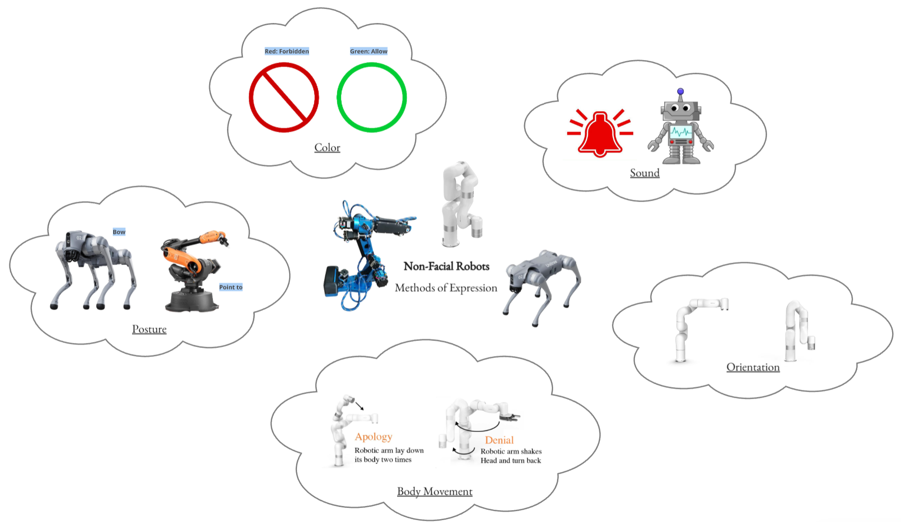
Limited research has explored how non-facial robots engage in failure recovery communication.
Co-design is a powerful tool for designers to introspect their experiences and formulate insights during the design process, and it has permeated various fields related to computational systems. In the realm of developing physical actions, the Human-Robot Interaction community has introduced a method known as "body-storming." Body-storming involves role-playing and interaction with actors and props.
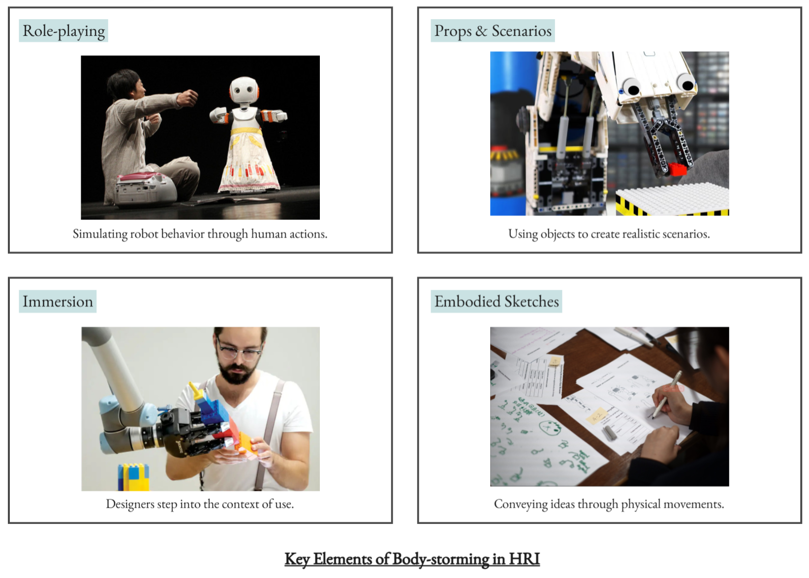
This is a multi-stage generative and analytical design process that enables designers to explicitly convey the significance of movements, based on human personality and behaviors, to other stakeholders in the design process.
Research Questions and Key Contributions
In this study, we use robotic body movements as a way to communicate recovery from failure, applying insights from human participants’ understanding of the failure scenario to create movements relevant and adaptable to human-robot collaborative tasks. The guiding questions of this research are:
RQ1.
How can robotic arm movements
convey different attitudes and action intents
in a scenario of recovery from failure?
RQ2.
What do the generated designs and movements produced by humans reveal about the
thinking behind
the body movement design process?
Previous research has not established valid body movements that convey failure recovery attitudes and actions intents. To facilitate more effective communication between robots and humans through the design of body movements, it is essential to explore human cognitive models and contexts regarding the expression of failure recovery attitudes and action intentions.
Co-design of Non-Verbal Recovery Movements
- Participants designed robotic arm movements to express positive and negative attitudes during failure recovery.
- A cooperative design approach called
body-storming
was used in workshops.
- Included individuals with experience in robotics development and collaboration to ensure diverse perspectives.
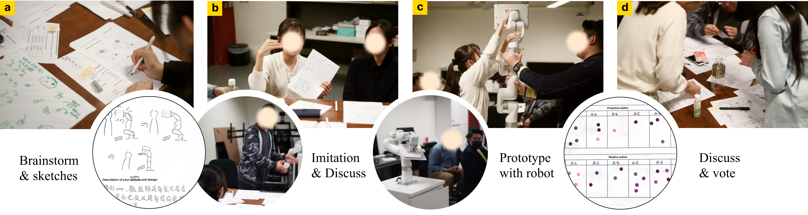
The participatory design procedures consist of four activities: (a) Brainstorm and sketch the movements, (b) using body to imitate the design and share viewpoints,(c) prototype the movement design in real robots to evaluate the design, (d)discuss and select the most effective expressions.
We recruited 16 participants (10 female, 6 male, labelled from P1 to P16) through convenient sampling from the local university communities, using mailing lists and course rosters.
The following image shows the details of participants.
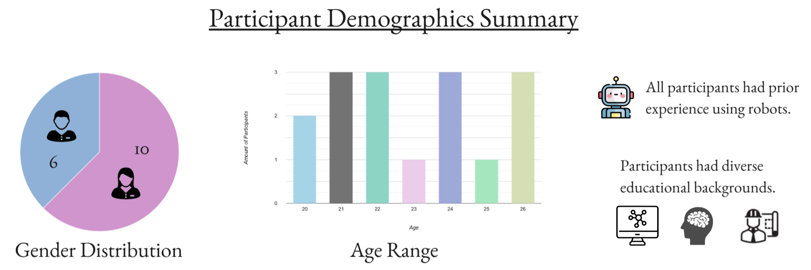
We conducted the workshop within a controlled laboratory setting. The setup of the workshop are illustrated below.
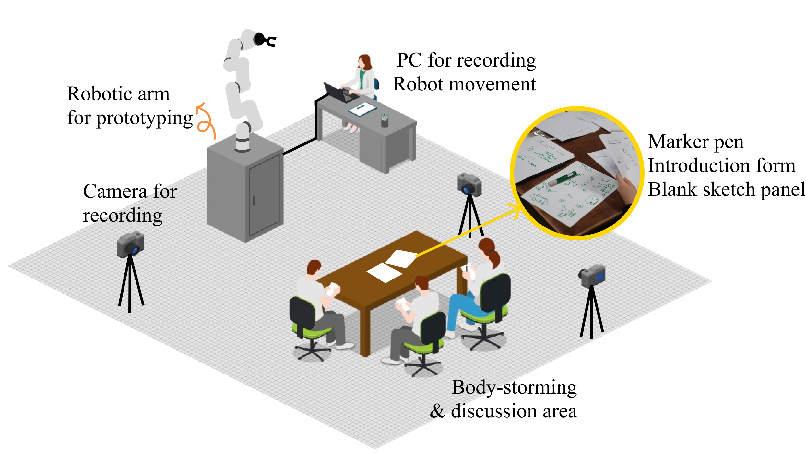
Each participant was provided a page of introduction to make them clear about the design tasks, and 6 blank sketch papers for design. In the same area, they were asked to present their design with their body and discuss. After design, a real robotic arm was provided for programmable movement prototype. Cameras were set around to record the design process.
There are a total of four activities during the workshop, which are illustrated in the following image.
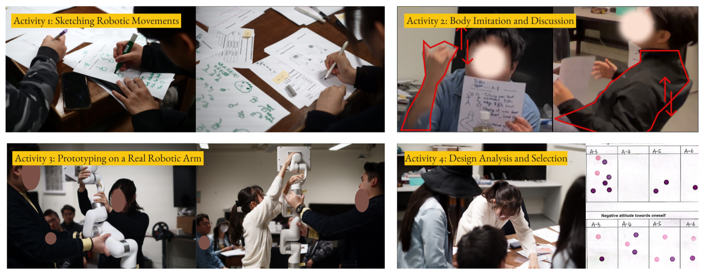
Data Analysis
Throughout the entirety of the workshops, we documented the participants' design sketches , and recorded their body performance and discussions regarding their design concepts. Prior to analyzing and summarizing the characteristics of the movement designs to represent each strategy, we transcribed all conversations of the participants. Subsequently, two researchers reviewed all workshop materials, including the recorded performances , transcripts , and sketches . The researchers first summarized the designed features from the selected designs in the activity 4. They then proceeded to code and categorize all relevant descriptions and physical movements provided by the participants captured in the videos in order to understand the context for the design. Following the coding process, the researchers engaged in collaborative discussions to refine the code and group them into themes.
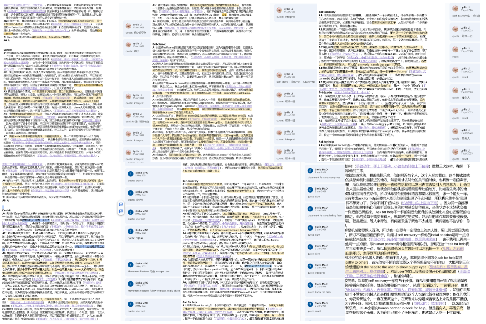
Design Outcomes and Summaries (RQ1)
To answer RQ1, we summarized the movement characteristics of the designs finally selected by the participants and reviewed the related experience and context of all participants in the discussion.
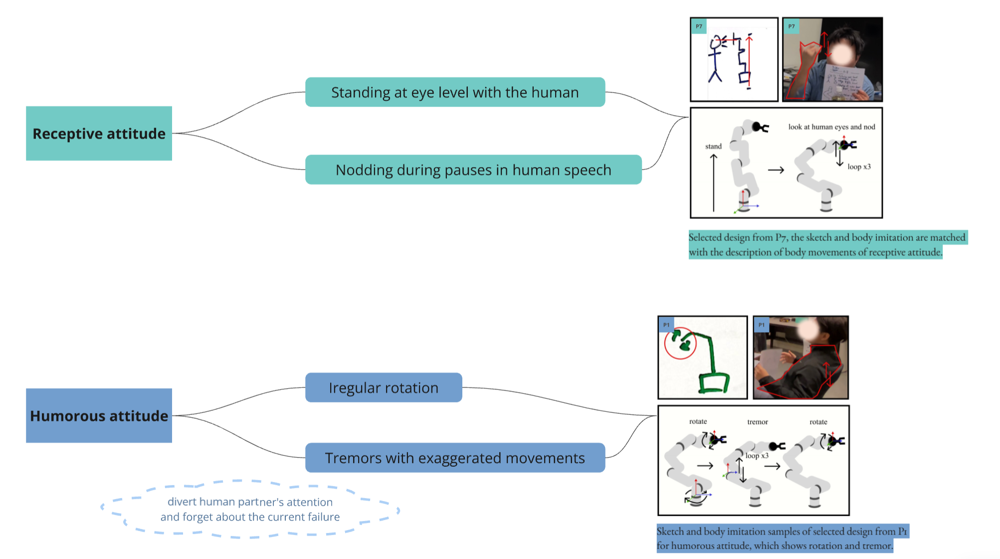
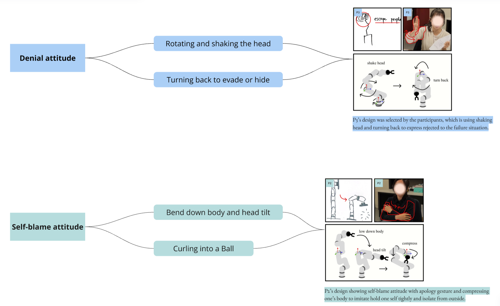
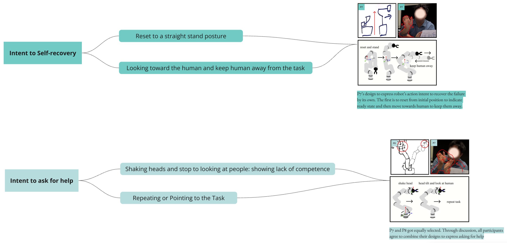
Observations During Movement Design (RQ2)
This section provides a review and synthesis of the observations made during the movement design process, with the objective of elucidating the cognitive processes underpinning body movement design to address RQ2.
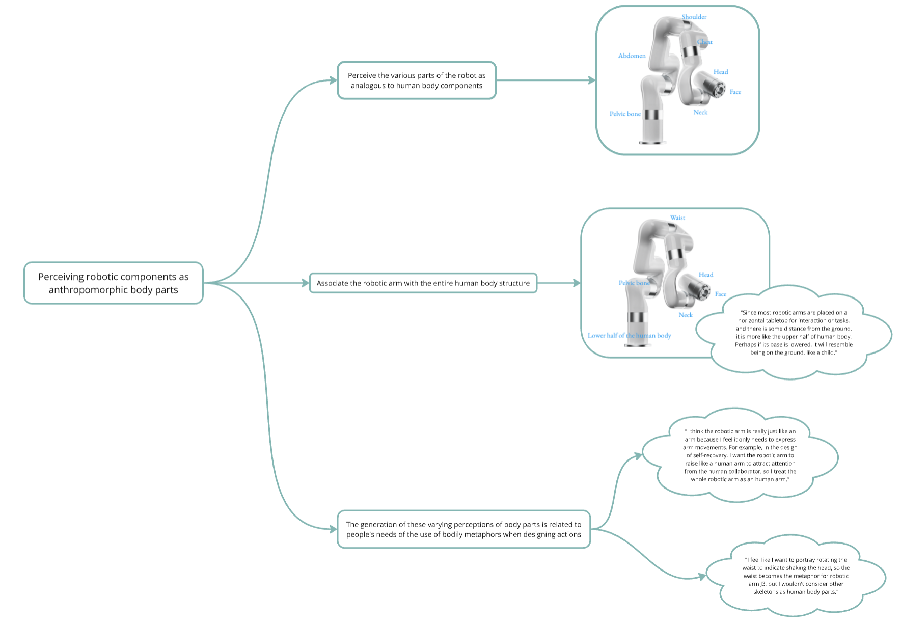
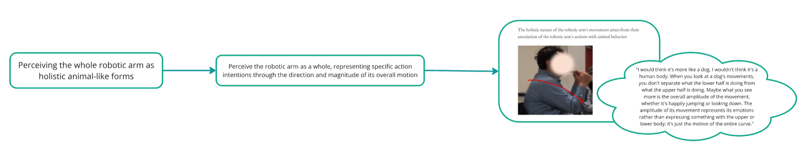
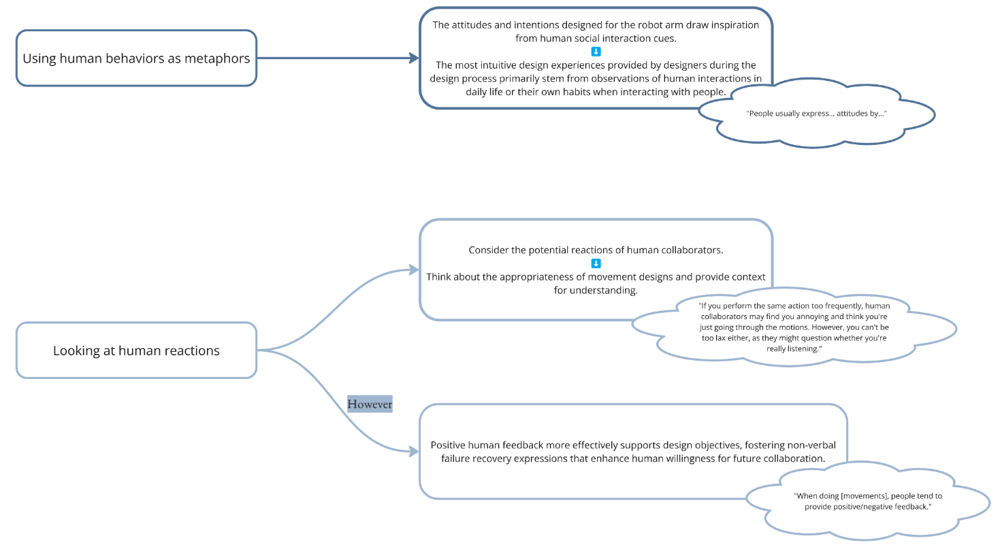
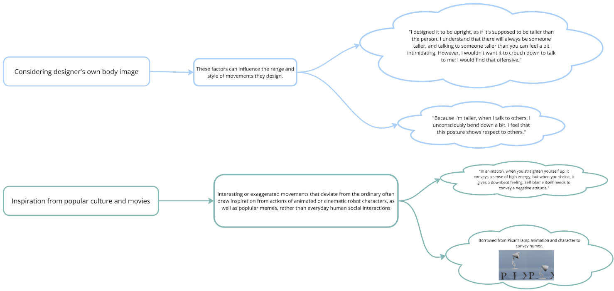
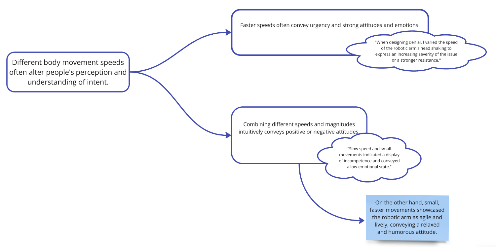

Discussion
- Reliance on Participant Expertise:
Assumes participants possess sufficient knowledge of robot capabilities and can map these to their personal experiences.
Potential Mitigation:
Emphasize robot arm limitations compared to humans during the prompting phase to encourage designs grounded in robot-specific constraints and reduce anthropomorphic biases.
- Homogeneous Participant Demographics:
Participants lack diversity in cultural backgrounds and age groups.
Future Direction:
Include participants from more diverse cultural and age demographics to foster creativity and efficiency in designs.
- Artificial Design Context:
Workshops were conducted in controlled environments rather than real-world collaborative settings.
Future Direction:
Conduct workshops in everyday collaborative scenarios to develop more practical, context-based designs with real-world applicability.
Foundations of Research and Skill Development in HCI
This was my first research project where I participated as a co-first author and contributed to the final paper. While the project had its shortcomings, such as an insufficiently thorough analysis of the co-design process and resulting conclusions that lacked novelty, as well as various issues with logical coherence and language clarity in the writing, it was an invaluable learning experience. Through this project, I gained skills in initiating research and identifying current gaps in the field. Additionally, I enhanced my ability to quickly learn and apply a programming language within a short timeframe. This project sparked my interest in Human-Computer Interaction (HCI) and, more specifically, in Human-Robot Interaction (HRI) research.
← Back